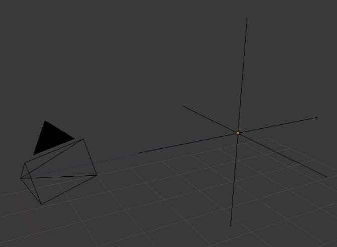

Empties¶
The “Empty” is a null object. It contains no real 几何体, but can be used as a handle for many purposes.
设置¶
{kind=link}
Empty Draw Types.
- Display
- Plain Axes
- Draws as six lines, initially with one pointing in each of the +X, -X, +Y, -Y, +Z, and -Z axis directions.
- Arrows
- Draws as arrows, initially pointing in the positive X,Y, and Z axis directions, each with a label.
- Single Arrow
- Draws as a single arrow, initially pointing in the +Z axis direction.
- Circle
- Draws as a circle initially in the XZ plane.
- Cube
- Draws as a cube, initially aligned to the XYZ axes.
- Sphere
- Draws as an implied sphere defined by three circles. Initially, the circles are aligned, one each, to the X, Y, and Z axes.
- Cone
- Draws as a cone, initially pointing in the +Y axis direction.
- 图像
Empties can display images. This can be used to create reference images, including blueprints or character sheets to model from, instead of using background images. The image is displayed regardless of the 3D display mode. The settings are the same as in Background 图像 设置
Note
While alpha-images can be used, there is a known limitation with object draw order, where alphas will not always draw on top of other objects when unselected.
- Size
- Controls the local size of the empty. This does not change its scale, but simply resizes the shape.
用法 and functions¶
Empties can serve as transform handles which cannot be edited and do not render. Empties are important and useful objects. Some examples of ways to use them include:
Parent object for a group of objects
- An Empty can be parented to any number of other objects - This gives the user the ability to control a group of objects easily, and without affecting a render.
Target for constraints
- An empty can also be used as a target for normal, or bone constraints.
- This gives the user far more control; for instance, a rig can easily be set up to enable a camera to point towards an empty using the Track to constraint
Array offset
- An empty can be used to offset an array modifier, meaning complex deformations can be achieved by only moving a single object.

An example of an empty being used to control an array. |

An example of an empty being used to control the track to constraint. |
{kind=link}
其他 common uses.
- Placeholders
- 骨骼装配 controls
- DOF distances
- 参考 图像s